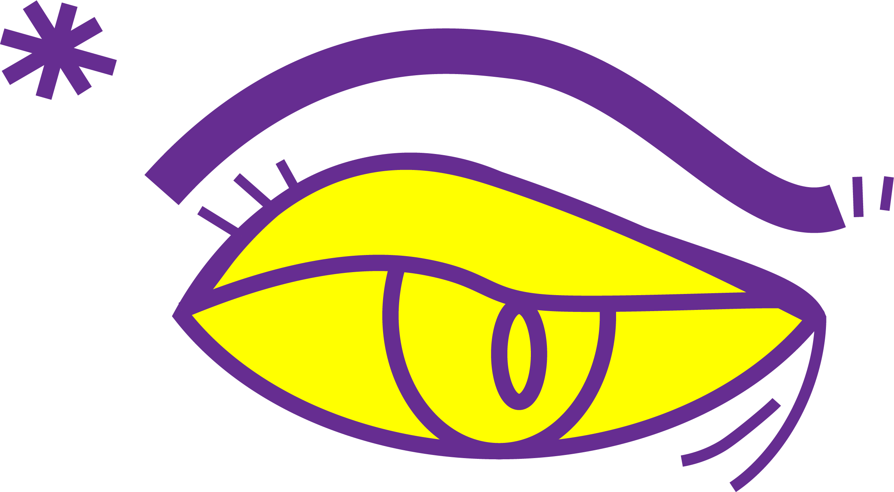

Below is my vector eye created in Adobe Illustrator. I didn’t have a specific emotion in mind when I started, as I’ve always found eyes difficult to draw. However, I think this eye conveys a sense of disinterest.
